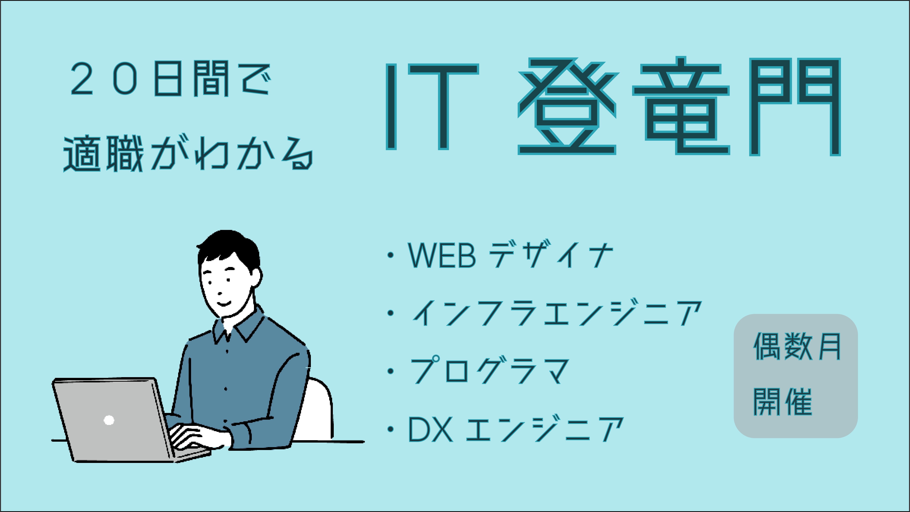
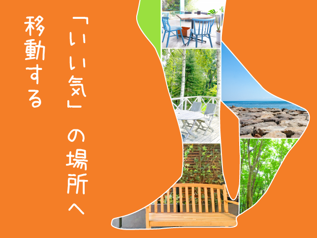
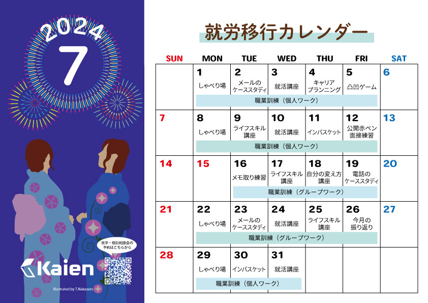
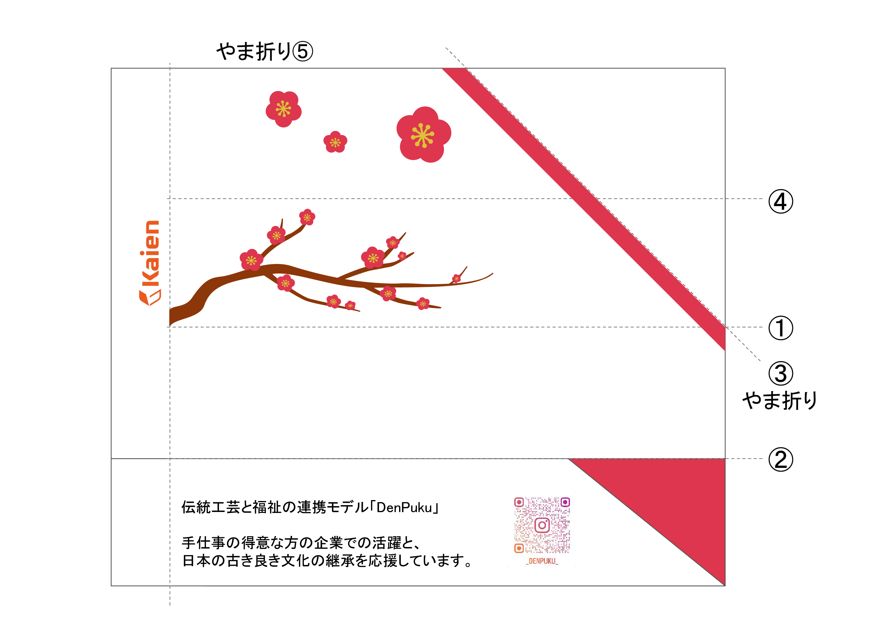
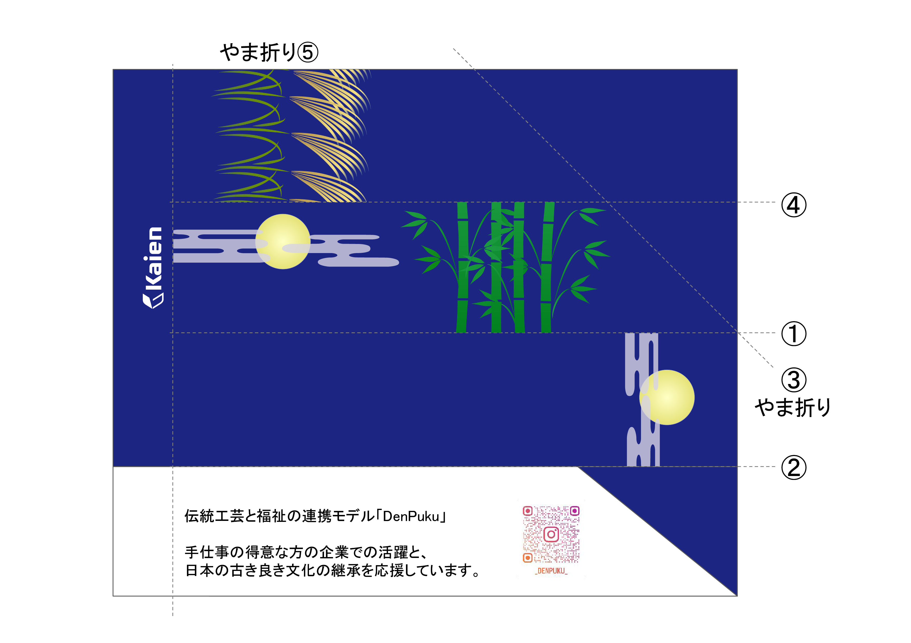
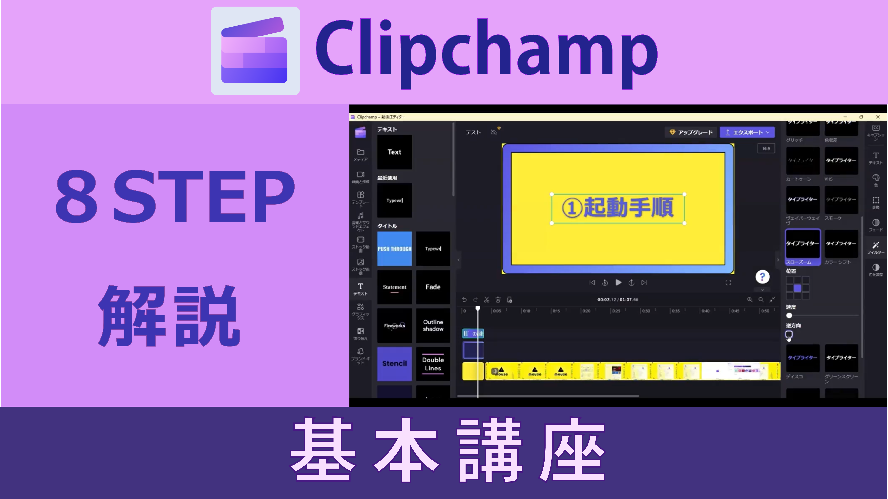
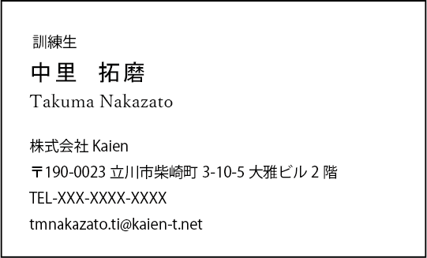
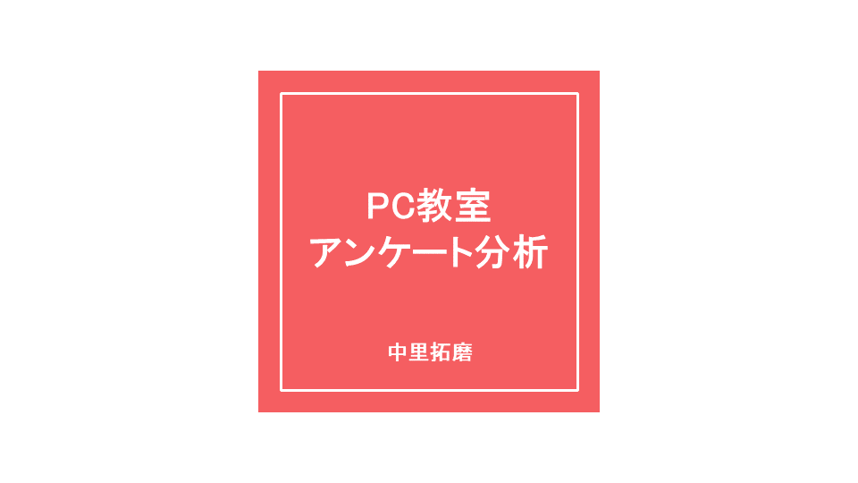
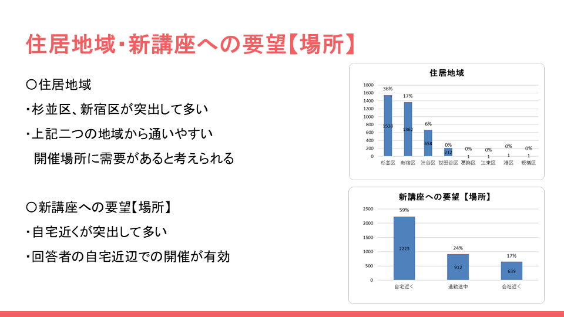

マイナーリーグバナー広告
制作日：1枚目 2023年12月1日 2枚目 2024年4月17日制作期間：1枚目 1日間(3時間) 2枚目 9日間(14時間)
使用ツール：Photoshop、Illustrator
障がい者雇用の求人サイトであるマイナーリーグのバナー広告という想定で制作したバナー画像です。
発達障害者向けの求人に特化したイメージが伝わるようキャッチコピーを考え、フリーのイラスト、
写真を組み合わせてデザインしました。

SNSアイキャッチ画像
制作日：1枚目 2023年11月30日 2枚目 2024年4月18日制作期間：1枚目 2日間(3.5時間) 2枚目 4日間(6時間)
使用ツール：Photoshop、Illustrator
IT登竜門というITスキル講座のSNS宣伝用画像という想定で制作したアイキャッチ画像です。
ITスキル講座をイメージしたフリーのイラストや写真、フォントを意識して組み合わせてデザインしました。

Kaienブログ用アイキャッチ画像
制作日：2024年7月17日 制作期間：8日間(12.5時間)使用ツール：Photoshop、Illustrator
Kaien訓練生が運営するオンラインショップのブログに掲載する、
「たった1分でできて一生が変わる魔法の習慣」という書籍の内容を紹介するための
アイキャッチ画像です。書籍に掲載された名言のうち、「いい気の場所に移動する」という
言葉の意味から、気分を変えられる場所に移動するイメージを連想し、
歩く足のシルエットと様々な場所のフリー写真を組み合わせて制作したデザインです。

訓練カレンダーチラシデザイン
制作日：2024年5月16日 制作期間：10日間(18.5時間)使用ツール：Photoshop、Illustrator
担当箇所：左側イラスト部分
Kaienの訓練スケジュールを外部にお知らせするチラシに掲載するイラストを制作したデザインです。
7月度のカレンダーのため、夏をイメージしたイラストを描いてデザインしました。
 


箸袋デザイン
制作日：1枚目 2024年3月13日 2枚目 2024年4月30日制作期間：1枚目 4日間(4時間) 2枚目 6日間(10時間)
使用ツール：Illustrator
担当箇所：枠内イラスト部分
Kaienのプログラムで作成された漆塗りの箸を入れる箸袋のデザインです。
箸から和風のイメージが合うと考え、それぞれ梅の花、月夜をイメージしたイラストを描いてデザインしました。

動画サムネイル画像
制作日：2023年11月29日 制作期間：3日間(3.5時間)使用ツール：Photoshop、Illustrator
Clipchampという動画編集ソフトの解説動画のサムネイルという想定で制作したサムネイル画像です。
Clipchampのロゴの配色を参考にして、それをイメージできる配色を意識して作業画面と組み合わせ、
制作しました。

Kaien名刺作成
制作日：2023年11月27日 制作期間：1日間(1時間)使用ツール：Photoshop、Illustrator
Kaien訓練生としての名刺という想定で制作した名刺です。
基本的なレイアウトに沿って見やすいものになるように制作しました。
 
アンケート分析・スライド作成
制作日：2023年3月8日 制作期間：スライド10枚 5日間(9時間)使用ツール：PowerPoint
PC教室を開く上でのニーズをアンケートから分析、グラフを作成し、
社内でスライド発表をするという想定で作成したスライドです。
PowerPointのテーマを基に、色や文字が見やすく整った印象になるように制作しました。